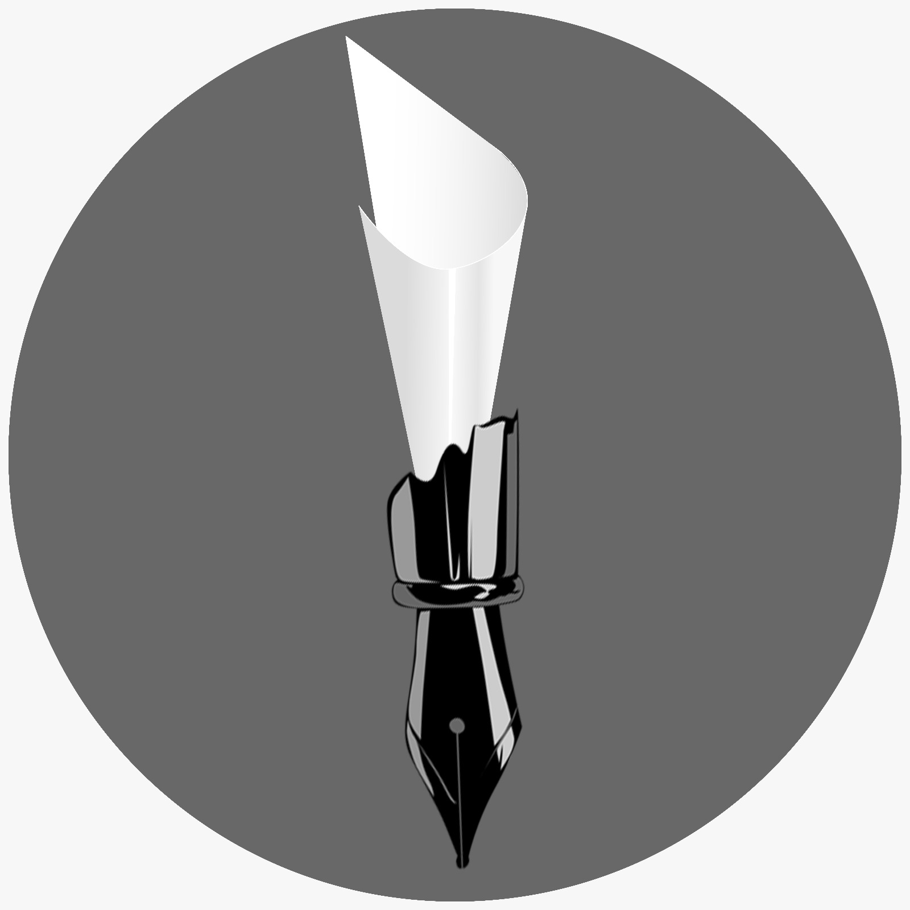

-
PAPERFEST
Hello,
Greetings from Technovision 10.0, Shri Ramdeobaba College of Engineering and Management, Nagpur.
We are happy to introduce you with a National level paper presentation competition called “PAPER FEST” held under TECNOVISION 10.0 2017.
It is a technical event that dilates the scope for aspiring engineers to present and discuss various aspects of electronic system design, software/ hardware trade-off, electrical and mechanical applicable technologies. Here, students’ viewpoint will be submitted in the form of a paper relating to the following five themes:
i) Track 1: Electronics
1. Biometric Applications
2. Embedded System, RTOS and VLSI
3. Intelligent Automation, Medical Imaging
4. Wireless communication
5. Non-Linear Control, PLC, SCADA Based Systems
6. Sensor Networks, Smart Sensors
7. Soft Computing, Speech and Image Processing
ii) Track 2: Computers
1. Artificial Intelligence
2. Database Technology
3. Computer Graphics
4. Computer Application
5. Cyber Securities
6. Web Intelligence and Big Data
iii) Track 3: Mechanical/ Industrial PAPER FEST
1. Fluid and Thermal Engineering
2. Machine and Mechanism
3. Refrigeration and Air Conditioning
4. Industrial Engineering and Automation
5. Materials Technology
6. Energy Conversion
iv) Track 4: Electrical
1. Electric Vehicles and Automotive Applications
2. Smart Cities Solutions, Smart Buildings, And Home Automation
3. Fuzzy logic and Neural Network application in Electrical Systems
4. Renewable Energy : Prospects & Implementation
5. Power Electronics application in Power System- FACTS/Power Quality/ HVDC/ HVAC
v) Track 5: Civil
1. Structural Engineering
2. Geotechnical Engineering
3. Surveying Engineering
4. Transportation Engineering
5. Safety and Monitoring
-
Event Head
Manas Agrawal: 9011511969
Event Co-Head
Siddhesh: 9424144153
Teacher Incharge
Prof.Chitra Upadhaya
Prof. Chetana Thaokar
-
The paper should be strictly according to the following standards mentioned.
Format
Article files should be provided in Microsoft Word format. LaTex files can be used if an accompanying PDF document is provided. PDF as a sole file type is not accepted, a PDF must be accompanied by the source file. Acceptable figure file types are listed further below.
Article Length
Articles should be between 3000 and 6000 words in length. This includes all text including references and appendices. Please allow 350 words for each figure or table.
Article Title
A title of not more than 16 words should be provided.
Author details
All contributing authors’ names should be added to the paper in the correct order.
Biographies and acknowledgements
Authors who wish to include these items should save them together in an MS Word file to be uploaded with the submission. If they are to be included, a brief professional biography of not more than 100 words should be supplied for each named author.
Research funding
Authors must declare all sources of external research funding in their article and a statement to this effect should appear in the Acknowledgements section. Authors should describe the role of the funder or financial sponsor in the entire research process, from study design to submission.
Structured Extended Abstract
Authors must supply a structured abstract in their submission, set out under 4-7 subheadings:
• Purpose (mandatory)
• Design/methodology/approach (mandatory)
• Findings (mandatory)
• Research limitations/implications (if applicable)
• Practical implications (if applicable)
• Social implications (if applicable)
• Originality/value (mandatory)
Maximum is 1000-1500 words in total (including keywords and article classification, see below).
Authors should avoid the use of personal pronouns within the structured abstract and body of the paper (e.g. “this paper investigates…” is correct, “I investigate…” is incorrect).
Keywords
Authors should provide appropriate and short keywords in the paper that encapsulates the principal topics of the paper. The maximum number of keywords is 12.
Notes/Endnotes
Notes or Endnotes should be used only if absolutely necessary and must be identified in the text by consecutive numbers, enclosed in square brackets and listed at the end of the article.
Figures
All Figures (charts, diagrams, line drawings, web pages/screenshots, and photographic images) should be submitted in electronic form.
All Figures should be of high quality, legible and numbered consecutively with arabic numerals. Graphics may be supplied in colour to facilitate their appearance on the online database.
Figures created in MS Word, MS PowerPoint, MS Excel, Illustrator should be supplied in their native formats. Electronic figures created in other applications should be copied from the origination software and pasted into a blank MS Word document or saved and imported into an MS Word document or alternatively create a .pdf file from the origination software.
Figures which cannot be supplied as above are acceptable in the standard image formats which are: .pdf, .ai, and .eps. If you are unable to supply graphics in these formats then please ensure they are .tif, .jpeg, or .bmp at a resolution of at least 300dpi and at least 10cm wide.
To prepare web pages/screenshots simultaneously press the “Alt” and “Print screen” keys on the keyboard, open a blank Microsoft Word document and simultaneously press “Ctrl” and “V” to paste the image. (Capture all the contents/windows on the computer screen to paste into MS Word, by simultaneously pressing “Ctrl” and “Print screen”.) Photographic images should be submitted electronically and of high quality. They should be saved as .tif or .jpeg files at a resolution of at least 300dpi and at least 10cm wide. Digital camera settings should be set at the highest resolution/quality possible.
Tables
Tables should be typed and included in a separate file to the main body of the article. The position of each table should be clearly labelled in the body text of article with corresponding labels being clearly shown in the separate file. Ensure that any superscripts or asterisks are shown next to the relevant items and have corresponding explanations displayed as footnotes to the table, figure or plate.
References
References to other publications must be in Harvard style and carefully checked for completeness, accuracy and consistency. This is very important in an electronic environment because it enables your readers to exploit the Reference Linking facility on the database and link back to the works you have cited through CrossRef. You should cite publications in the text: (Adams, 2006) using the first named author’s name or (Adams and Brown, 2006) citing both names of two, and (Adams et al., 2006), when there are three or more authors. At the end of the paper a reference list in alphabetical order should be supplied.
Note : Guidelines are as per Emerald Insight. -
1. REGISTRATION:
• Paper presentation registration fees Rs500/team.
• Students have submit their Paper/Abstract at https://goo.gl/N0lXJA.
• Maximum 4 members per team.
2. PAPER SUBMISSION (Round1):
• The papers falling under the tracks must submit their Paper/Abstract at https://goo.gl/N0lXJA on or before 27th of Feb 2017.
• The paper should strictly according to standards mentioned in next Article.
• Paper must be saved as TrackShortform_titleofpaper.pdf, for example: ME_gearsystem.pdf
• On the basis of your work, competent teams will be selected by the judges and will be given a chance to give the final presentation.
• The final teams will be informed by March 1st, 2017.
3. FINAL PRESENTATION (Round2):
• The selected papers will be grouped under oral presentation.
• The presentation of a paper will be limited to a maximum of 15 minutes (10+5). Presentation timing for each team will be 10 minutes.
• It will be carried in two slots and the selected teams will be informed about the schedule respectively.
• Two judges per track will be seated.
• Prizes & Certificates:
1. Best paper award and a Cash prize worth Rs5000/ for each track.
2. Nationally recognized certificates to all the selected participants of Paper Fest